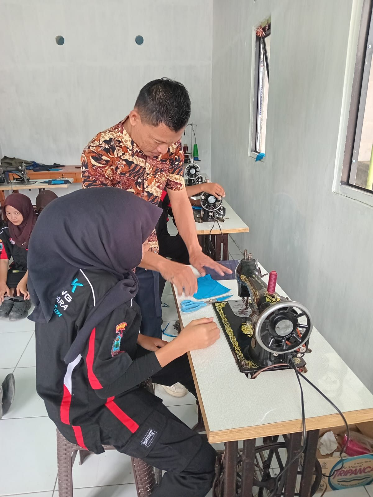
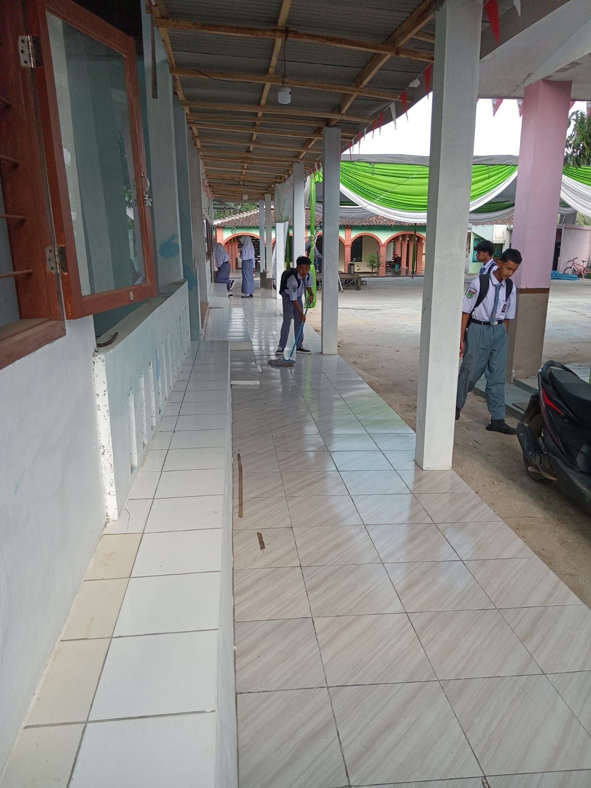
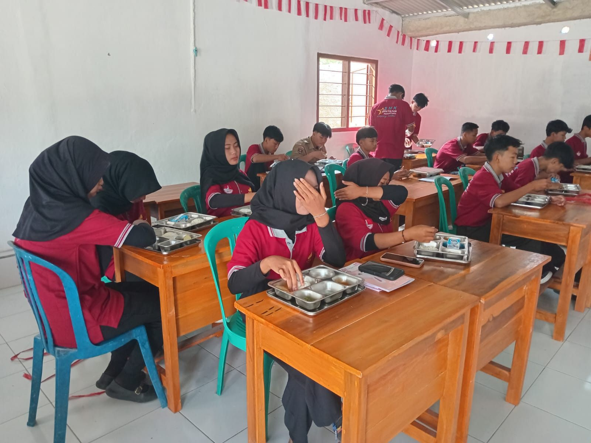
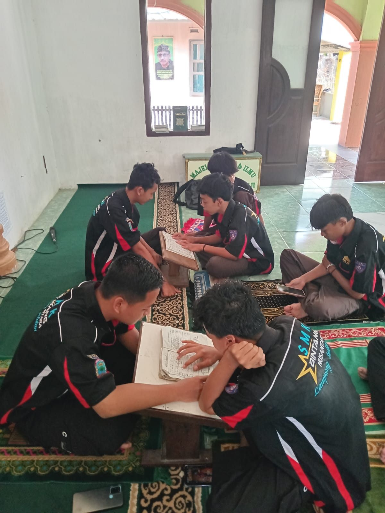

Visi
Menjadi sekolah menengah kejuruan yang unggul, berkarakter, dan siap kerja, serta mampu menjawab kebutuhan dunia industri dan masyarakat.

NPSN 70009003 · Tanjungbintang, Lampung Selatan
Sekolah menengah kejuruan yang berdiri sejak 13 Juli 2026. Dua kompetensi keahlian, 23 siswa, dan semangat baru untuk mencetak lulusan yang siap kerja.
01 / 05 Kegiatan belajar di ruang kelas
Terbuka untuk kunjungan
Silakan datang langsung ke sekolah, atau hubungi kami untuk bertanya tentang jurusan, fasilitas, dan pendaftaran siswa baru.
Profil Sekolah
SMK Bintang Nusantara 2 hadir untuk memberi ruang belajar vokasi bagi siswa di Tanjungbintang dan sekitarnya, dengan pembelajaran yang dekat dengan praktik.

SMK Bintang Nusantara 2 adalah sekolah menengah kejuruan swasta di Kecamatan Tanjungbintang, Kabupaten Lampung Selatan. Resmi berdiri pada 13 Juli 2026, sekolah ini membuka kelas 10 dengan dua kompetensi keahlian: Teknik Sepeda Motor dan Tata Busana.
Di tahun pertamanya, SMK Bintang Nusantara 2 menampung 23 siswa — 13 siswa Teknik Sepeda Motor dan 10 siswa Tata Busana. Kegiatan belajar tidak hanya berlangsung di kelas, tetapi juga di ruang praktik, lapangan, dan lingkungan sekolah.
Menjadi sekolah menengah kejuruan yang unggul, berkarakter, dan siap kerja, serta mampu menjawab kebutuhan dunia industri dan masyarakat.
Struktur Organisasi
Susunan tenaga pendidik dan kependidikan SMK Bintang Nusantara 2 pada tahun ajaran 2026/2027.
Kepala Sekolah
Memimpin penyelenggaraan pendidikan di sekolah.
Administrasi dan layanan sekolah.
Pengajar jurusan Teknik Sepeda Motor.
Pengajar jurusan Tata Busana.
* Nama guru dan tenaga kependidikan selain kepala sekolah masih berupa data sementara.
Kompetensi Keahlian
Setiap jurusan punya ruang praktik sendiri, sehingga siswa belajar langsung dengan peralatan yang digunakan di dunia kerja.
13 siswa
01 · TSM
Mempelajari perawatan dan perbaikan sepeda motor, mulai dari mesin, kelistrikan, hingga sistem pemindah tenaga. Pembelajaran dilakukan langsung di ruang praktik sekolah.

10 siswa02 · TB
Mempelajari dasar desain, pembuatan pola, menjahit, hingga penyelesaian produk busana. Siswa berlatih menggunakan mesin jahit di ruang praktik tata busana.
Sarana & Prasarana
Sarana belajar, ruang praktik, area olahraga, dan fasilitas umum yang menunjang kegiatan sehari-hari di sekolah.
Ruang kelas untuk kegiatan belajar teori dan pembelajaran bersama.
Ruang praktik untuk jurusan Teknik Sepeda Motor dan Tata Busana.
Satu ruang yang digunakan guru dan kepala sekolah.
Lapangan voli untuk olahraga dan kegiatan siswa.
Lapangan futsal di lingkungan sekolah.
Kantin yang melayani kebutuhan siswa dan warga sekolah.
Kamar mandi yang tersedia untuk siswa dan guru.
Galeri
Belajar, praktik, beribadah, dan berkegiatan bersama — sebagian kecil momen dari sekolah kami.







Kontak
Datang langsung ke sekolah atau gunakan tautan peta di bawah untuk menemukan lokasi kami.
Jl. Endro Surmin Gg. Pondok Dusun Negeri 5B, Desa Way Galih, Kec. Tanjungbintang, Lampung Selatan 35365
Buka di Google Maps